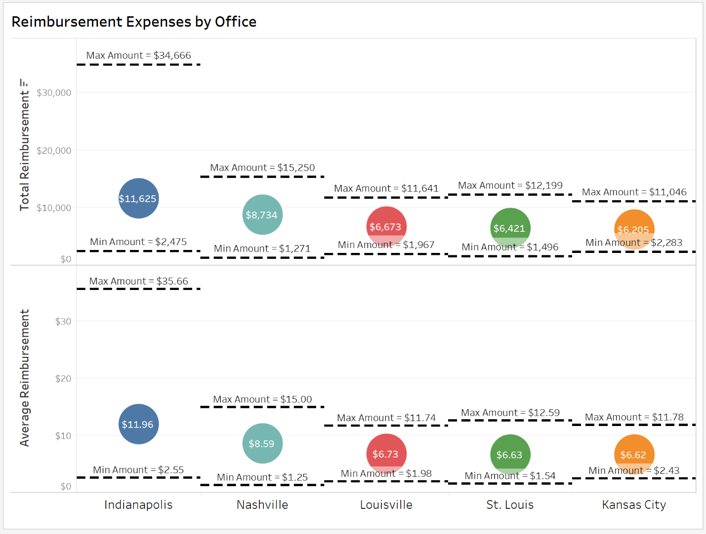
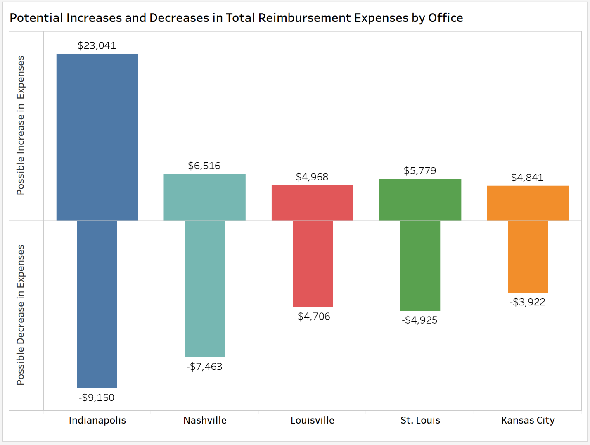
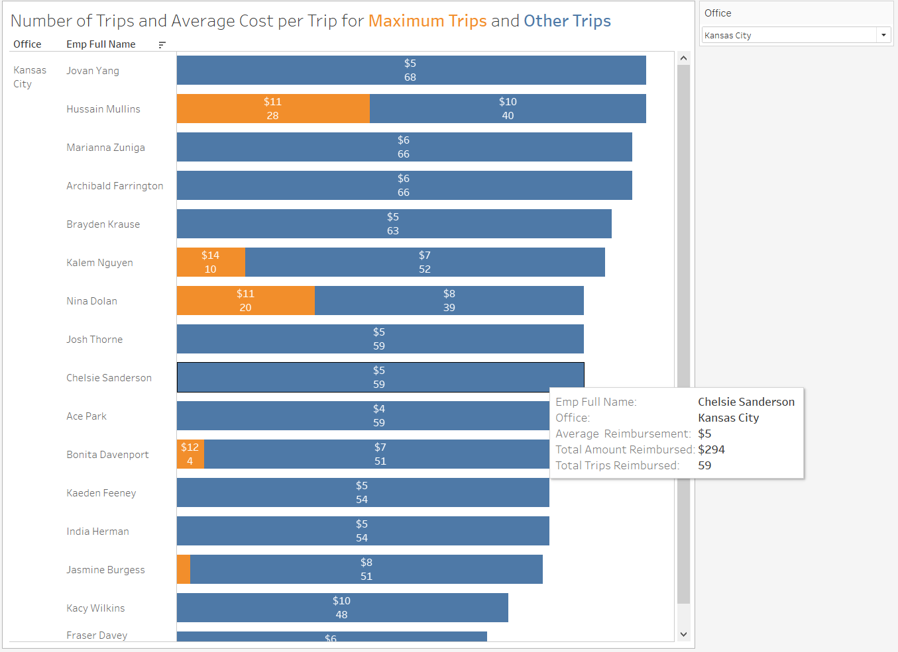
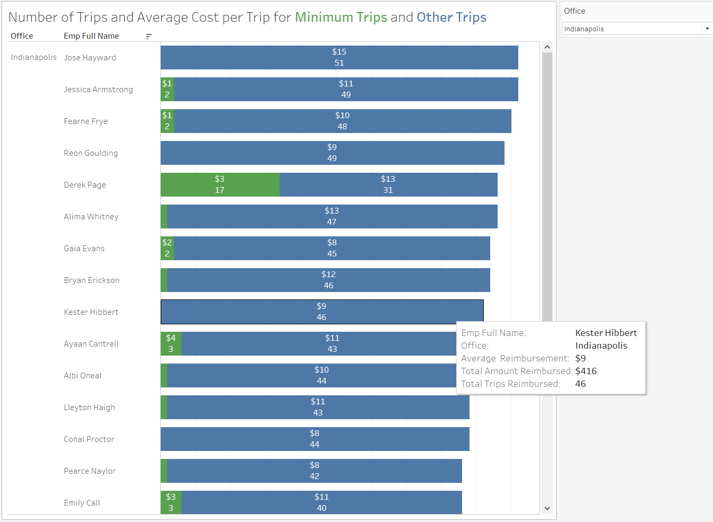
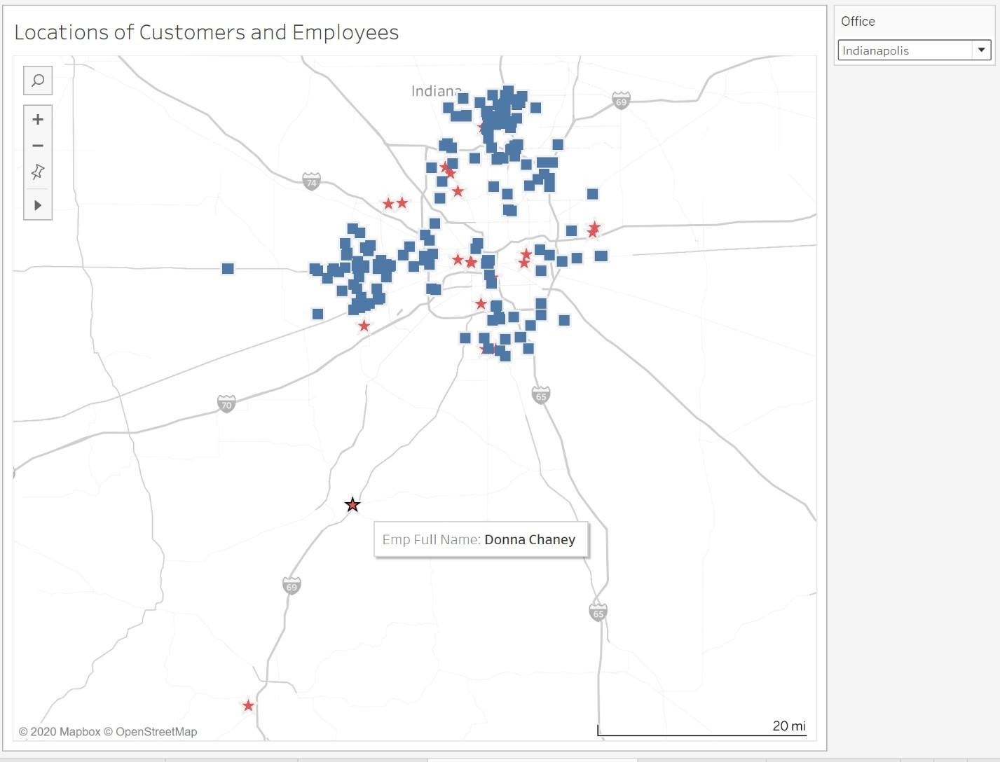
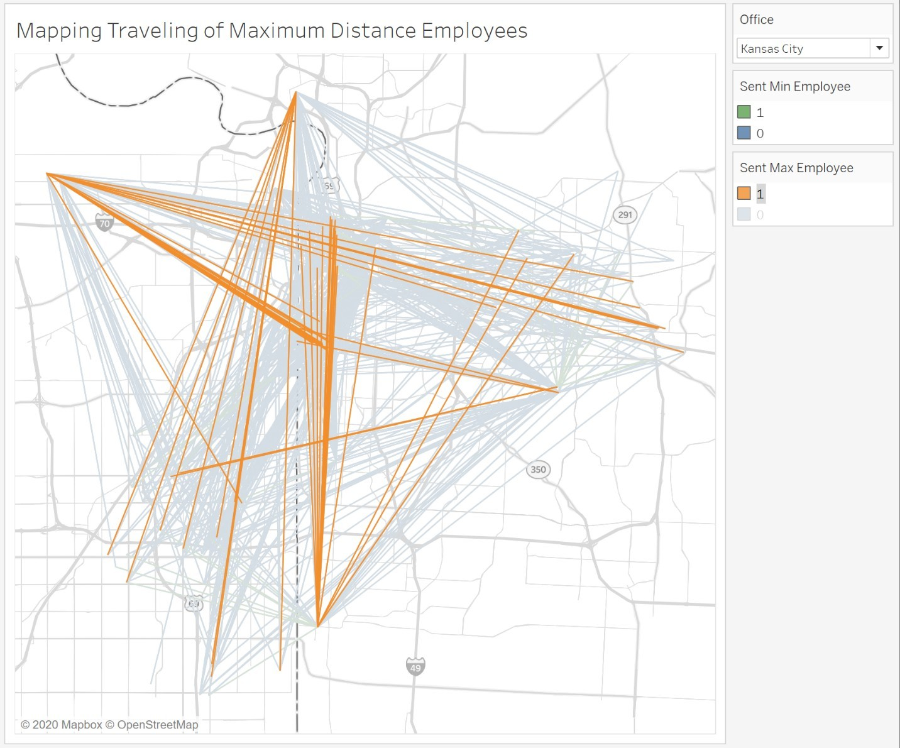
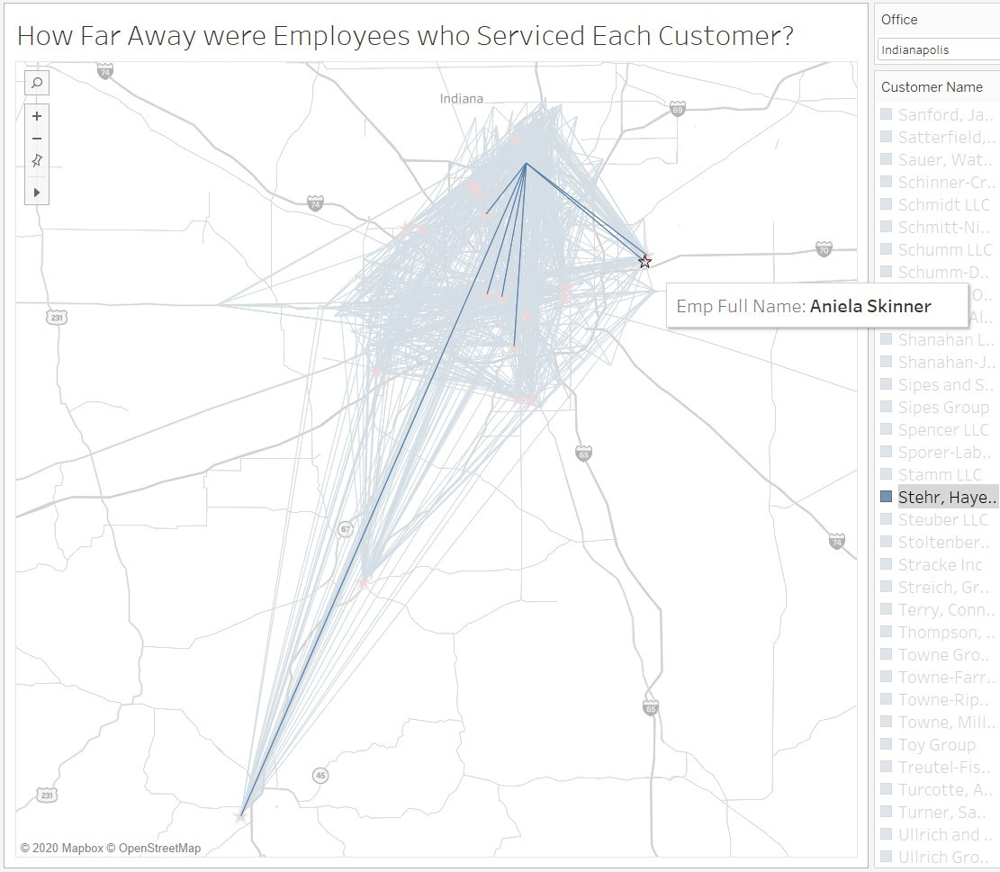

Analytics mindset
Fairview Inc.
Employee assignment method
Overview
You work as a corporate accountant for Fairview Inc., a software-as-a-service (SaaS) company. Fairview Inc. uses a unique “high-human-touch” sales and servicing model. That is, Fairview Inc. sells only within certain cities and hires numerous sales agents and information technology (IT) agents in each city where it operates. The company then has these employees visit the customers to provide face-to-face sales and support.
The model has been successful so far and Fairview Inc. now operates in five cities in the Midwestern United States: Indianapolis, Kansas City, Louisville, Nashville and St. Louis. Each city has a physical office staffed by a manager and customer support representatives. The office manager is responsible for and oversees all work done in the office. The customer support representatives field calls and send sales agents and IT service representatives to visit clients. When a customer support representative receives a call, they assign the employee who has not performed the task for the longest time. That way, every employee has an equal opportunity to visit customers.
Fairview Inc. pays employees for the time they spend visiting customers. The company also reimburses employees when they travel to a customer’s business, since employees use their own vehicles for transportation. After the trip, the employee submits their mileage for reimbursement. The employee submits their home address, the customer address and their self-reported mileage that they traveled to visit the customer. The company then reimburses the employee using the Internal Revenue Service (IRS) standard mileage rate.
The CFO at Fairview Inc., Isiah Simon, is concerned about the policy of assigning the employee who has not performed the task for the longest time to serve the next incoming call. The CFO is worried that this may be inefficient and causing the company to waste resources; however, the CFO has no idea if this is the case or not. He has asked you to prepare data analytics dashboards and a report to help inform the decision-making process.
To help prepare your report, the IT Department has pulled together a list of the trips for the previous year. In total, employees sought reimbursements for 4,888 trips at a total cost of $39,658.61 and an average reimbursement rate of $8.11 per trip. The attached Excel workbook labeled Analytics_mindset_case_studies_Employee_assignment_method.xlsx contains that data. The following is a data dictionary for the items contained in the Excel file.
RowID: a unique identifier for each row
EmployeeID: a unique identifier for each employee
EmpFullName: the full name of the employee seeking reimbursement
EmployeeAddress: the address of the employee seeking reimbursement
CustomerID: a unique identifier for each customer
CustomerName: the name of the customer the employee visited
CustomerAddress: the address of the customer the employee visited
Office: the office to which the employee is assigned (The possible offices include Indianapolis, Kansas City, Louisville, Nashville and St. Louis.)
ValidatedMileage: IT Department created a bot using robotic process automation to scrape the mileage from the reported locations using Google Maps (This field contains the results from the bot of the mileage between the two locations.)
TimeOfTrip: the time of day the employee made their trip (Note that when importing this data into other systems, the other system often assigns additional information. That is, the only meaningful item of data is the time stamp [hours and minutes], and any additional data, such as year, quarter, month, etc., has no meaning and should be ignored.)
MinMileage: the minimum mileage an employee could travel to visit a customer
MaxMileage: the maximum mileage an employee could travel to visit a customer
MinEmpFullName: the name of the employee who lives closest to the customer
MaxEmpFullName: the name of the employee who lives farthest from the customer
CustLatitude: the latitude coordinate of the customer’s location
CustLongitude: the longitude coordinate of the customer’s location
EmpLatitude: the latitude coordinate of the employee who visited the customer
EmpLongitude: the longitude coordinate of the employee who visited the customer
Implementing an analytics mindset
Having and using an analytics mindset are critical in accounting and business. An analytics mindset is the ability to:
Ask the right questions
Extract, transform and load relevant data
Apply appropriate data analytics techniques
Interpret and share the results with stakeholders
Using an analytics mindset means using data to inform your decision, rather than going with your “gut feeling,” another person’s recommendation or using another way of deciding what to do. You will need to use the analytics mindset to decide which questions you should ask, how to prepare the data for analysis, how to analyze the data and then in deciding what to share with the CFO.
Option 1
Required
Prepare visualizations (following high-quality design principles) that do the following things:
Examine the actual, maximum possible and minimum possible reimbursement expenses by office
Examine the potential increase and decrease available to each office
Examine the number of trips employees take and for how many of those trips the employee was the farthest employee from or the closest employee to the customer
Examine maps that show the locations of employees and customers and the distances traveled for each trip
Interpret the visualizations and prepare a report with recommendations for Mr. Simon about what Fairview Inc. should do
Submit the following for grading:
The visualizations you designed
A memo highlighting the important takeaways from the data and your recommendations
Option 2
Required
Build each of the following visualizations. Once the visualizations are finished, interpret what they mean and prepare recommendations for Mr. Simon about what Fairview Inc. should do.
This visualization shows the actual total and average reimbursement per office. It also provides the upper and lower bounds showing what reimbursements could have been if the company sent the farthest or closest employee to respond to each customer.

This visualization shows the total possible increase or decrease in reimbursement expenses for each office based on the upper and lower bounds showing what reimbursements could have been if the company sent the farthest or closest employee to respond to each customer.

This visualization shows for each office (notice the filter) how many trips each employee took and for which of those trips the employee was the farthest possible employee from the customer. It also reports the average and total (see tooltip) expenses for each employee. The bar length is determined by the total number of trips taken by an employee.

This visualization shows for each office (notice the filter) how many trips each employee took and for which of those trips the employee was the closest possible employee to the customer. It also reports the average and total (see tooltip) expenses for each employee. The bar length is determined by the total number of trips taken by an employee.

This visualization maps the locations of customers and employees. Notice the filter that allows for easy viewing each office location. The map displays layers related to streets, highways and routes, as well as state and province borders and names. As a hint, you will need to use a “dual-axis” map to generate this visualization and use the MakePoint function.

This visualization maps all of the actual distances that employees traveled between their location and the customer’s location. It also shows for which of those distances the trip was made by the employee farthest from (orange) or closest to (green) the customer. In this way, you can click on the colors in the legends and highlight those trips. The map displays layers related to streets, highways and routes, as well as state and province borders and names. As a hint, you will need to use a dual-axis map to generate this visualization and use the MakeLine function.

Like problem 6., this visualization maps all of the actual distances that employees traveled between their location and the customer’s location. However, it highlights the locations of the employees so a user can select a customer and have a visual showing who the closest employees are when they are examining the actual trips that were made. The map displays layers related to streets, highways and routes, as well as state and province borders and names. As a hint, you will need to use a dual-axis map to generate this visualization and use the MakeLine function.

Submit the following for grading:
The visualizations you designed in a Tableau-packaged workbook file (.twbx)
A memo highlighting the important takeaways from the data and your recommendations